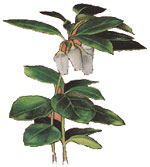
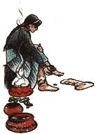
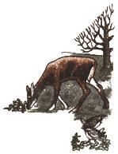

Lately, more and more people have begun to understand just how limited - in both variety and nutritional value - our "modern" diets have become. This realization has sparked a new and widespread interest in the culinary and therapeutic uses of herbs, those plants which (although not well-known today) were, just one short generation ago, honored "guests" on the dinner tables and in the medicine chests of our grandparents' homes. In this regular feature, we'll examine the availability, cultivation and benefits of our "forgotten" vegetable foods and remedies, and - we hope - help prevent the loss of still another bit of ancestral lore.
If you enjoy walking in mountain woods, you may already have met this charming herb. Wintergreen (Gaultheria procumbens ) is common over the eastern United States from Canada to the hills of Georgia, and thrives in the acidic leaf-mold soil and filtered shade often found at the edges of forests. It grows from a creeping underground stem that lies just below the surface of the soil. From this "root" individual plants rise some 2 to 6 inches bearing alternate, broad, leathery leaves that are glossy green above and paler beneath.
Nodding white flowers, each shaped like a single lily-of-the-valley blossom, appear in July or August, followed by shiny red berries that last all winter and are an important food source for grouse and deer. (Years ago, they were also sold, as confections, in the markets of Boston.)
Wintergreen leaves were often used by the Indians as treatment for toothaches and as a rub or tea for relieving the pains of rheumatism. Poultices of the foliage were applied to boils, felons (whitlows), swellings and inflammations - while small doses of wintergreen tea were reputed to improve one's general health and sense of well-being. (Large or too frequently taken amounts of the beverage, however, may have the opposite effect, causing inflammation of the stomach, swelling of the tongue, vomiting and rapid heartbeat!) And oil of wintergreen (natural or synthetic) has long been a major ingredient in ointments and liniments.
In recent years chemical analysis has supported the belief of the Indians and the pioneers in wintergreen's painkilling ability: The plant contains methyl salicylate, a substance related to aspirin. Further investigation has indicated that wintergreen has immunological properties, and it is now being studied in connection with leukemia treatments.
Today, the flavor and aroma of the herb are found in chewing gum, candy, desserts, perfume and preparations for the bath and the home medicine chest. Wintergreen is a great breath freshener, and its vigorous mintiness has been used for generations to disguise the bitter taste of various medications.
Wintergreen can be propagated from seeds or cuttings, or by layering. However, it's difficult to establish plants taken from the woods, and trying to do so may well lead to their death. Therefore, it's best to obtain seedlings or root divisions from a nursery. The herb grows most happily on shady slopes - in a "wild garden" environment rather than in domesticated beds - with lots of pine needle mulch.
When ordering from a nursery, be sure to specify the herb by its scientific name, as there are at least three other plants known as "wintergreen" in different areas of the country - while our little subject has (as the old riddle points out) some 33 common names! - Mother
|
 MOTHER EARTH NEWS STAFF Wintergreen (Gaultheria procumbens) has 33 common names! |
 MOTHER EARTH NEWS STAFF Poultices of the leaves can be used on boils and swellings. |
 MOTHER EARTH NEWS STAFF Partridge, grouse and deer love to eat the red berries. |